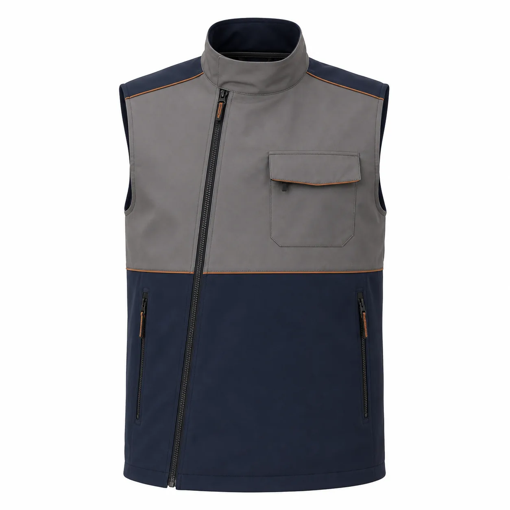

Taş Gri Lacivert Cepli Softshell Yelek
Taş gri üst gövde ve lacivert alt panelden oluşan iç dolgusuz softshell yelektir. Asimetrik ön fermuarı, kapaklı göğüs cebi, bakır renkli ince biyeleri ve dikey alt cepleriyle kurumsal servis ekiplerine farklı bir seçenek sunar.

Taş Gri Lacivert Cepli Softshell Yelek üretim ayrıntıları
Taş Gri Lacivert Cepli Softshell Yelek, kurumsal ekiplerde görev işlevi ve düzenli görünümü bir araya getirmek üzere planlanan softshell ürünleri modellerindendir. Taş gri ve lacivert | İç dolgusuz | Asimetrik fermuar | Kapaklı göğüs cebi | Bakır biye özellikleri modelin temel çerçevesini oluşturur.
Malzeme seçimi esnek softshell kumaş üzerinden; çalışma ortamı, vardiya süresi, hareket ve bakım düzeni dikkate alınarak yapılır. Dikiş, cep ve kapama noktaları numunede kontrol edilir.
Logo ölçüsü ve konumu kumaş yüzeyiyle birlikte değerlendirilir. Onaylanan nakış veya baskı uygulaması model koduna bağlanarak tekrar sipariş standardı korunur.
Adet, beden dağılımı, renk, teslimat noktası ve hedef tarih yazılı paylaşıldığında kumaş ve üretim planı netleştirilir. Seri üretim yalnız onaylanan kapsam üzerinden ilerler.
Model özellikleri
- Taş gri ve lacivert
- İç dolgusuz
- Asimetrik fermuar
- Kapaklı göğüs cebi
- Bakır biye
Benzer ürünler
Antrasit Fermuarlı Cepli Softshell Pantolon
KT-SS-013 kodlu kurumsal üretim modelini inceleyin.
Ürün detayına gidin →Haki Kapüşonlu Taktik Softshell Mont
KT-SS-014 kodlu kurumsal üretim modelini inceleyin.
Ürün detayına gidin →Antrasit Kapüşonlu Softshell Mont
KT-SS-015 kodlu kurumsal üretim modelini inceleyin.
Ürün detayına gidin →Sık sorulan sorular
Minimum sipariş kaç adettir?
Bu modelde özel üretim minimum siparişi 50 adettir.
Logo uygulanabilir mi?
Kumaşa göre nakış, DTF, transfer veya serigrafi uygulanabilir.
Farklı renk üretilebilir mi?
Kumaş ve aksesuar uygunluğuna göre kurumsal renk planlanabilir.
Numune hazırlanabilir mi?
Proje kapsamına göre seri üretim öncesinde numune hazırlanabilir.
Beden dağılımı nasıl belirlenir?
Çalışan listesi ve numune kontrolüyle beden dağılımı yazılı onaya alınır.
Teklif için ne gerekir?
Adet, beden, renk, logo, teslimat şehri ve hedef tarih paylaşılmalıdır.
KT-SS-019 için teklif alın.
Ürün, adet, beden ve logo bilgilerinizi paylaşın.